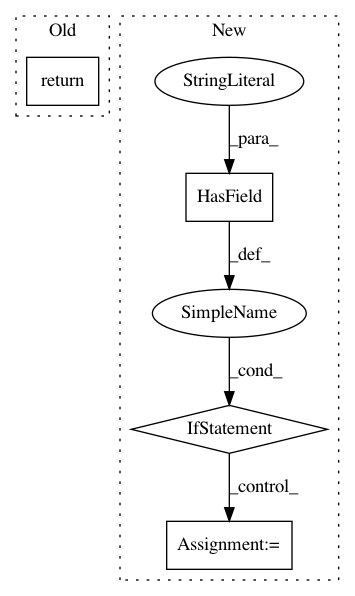

8b31db60e284a411856e9c05eb14d23b16be1966,research/object_detection/builders/input_reader_builder.py,,build,#Any#,34
Before Change
capacity=input_reader_config.queue_capacity,
min_after_dequeue=input_reader_config.min_after_dequeue)
return tf_example_decoder.TfExampleDecoder().decode(string_tensor)
raise ValueError("Unsupported input_reader_config.")
After Change
min_after_dequeue=input_reader_config.min_after_dequeue)
label_map_proto_file = None
if input_reader_config.HasField("label_map_path"):
label_map_proto_file = input_reader_config.label_map_path
decoder = tf_example_decoder.TfExampleDecoder(
load_instance_masks=input_reader_config.load_instance_masks,
label_map_proto_file=label_map_proto_file)
return decoder.decode(string_tensor)
In pattern: SUPERPATTERN
Frequency: 3
Non-data size: 4
Instances
Project Name: tensorflow/models
Commit Name: 8b31db60e284a411856e9c05eb14d23b16be1966
Time: 2017-10-27
Author: rathodv@google.com
File Name: research/object_detection/builders/input_reader_builder.py
Class Name:
Method Name: build
Project Name: OpenMined/PySyft
Commit Name: 5efaf25f5499c7065f1c37bfd4288159714406d8
Time: 2020-08-12
Author: vova@promail.spb.ru
File Name: src/syft/lib/torch/uppercase_tensor.py
Class Name: TorchTensorWrapper
Method Name: _data_proto2object
Project Name: OpenMined/PySyft
Commit Name: a35bc3be6bc0643a49bae001967fdeb54992c49a
Time: 2020-08-12
Author: 12518480+vvmnnnkv@users.noreply.github.com
File Name: src/syft/lib/torch/uppercase_tensor.py
Class Name: TorchTensorWrapper
Method Name: _data_proto2object